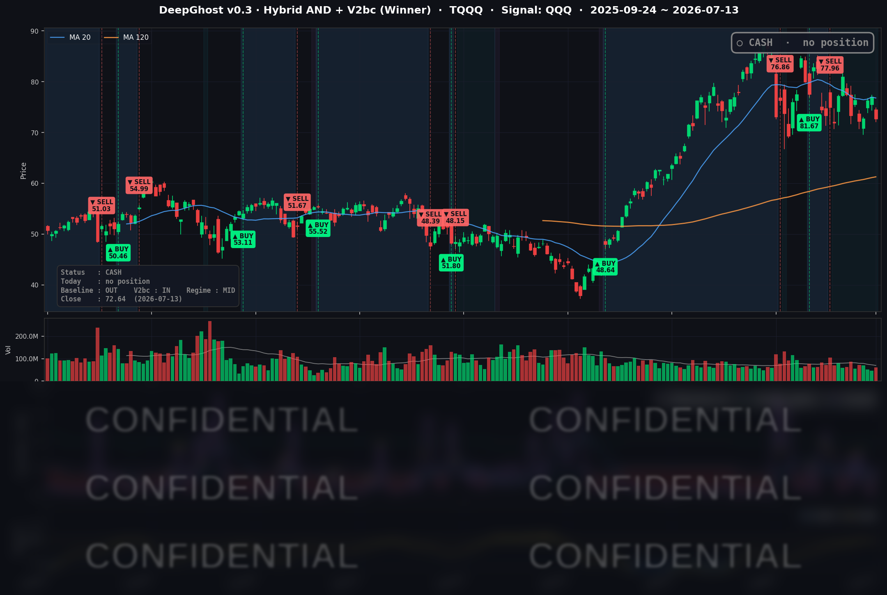

👻 매일 시그널과 히스토리를 홈페이지에서 한눈에 → www.ghostai.co.kr
미-이란 충돌 격화로 유가가 11% 폭등하면서 10년물 국채 금리도 4.6%를 넘겼습니다. 한국발 메모리 패닉셀도 한몫 보탰습니다. 위험한 시즌입니다. 이럴때 우리 모델은 빛을 발합니다.
📊 오늘의 매매 신호
| 항목 | 내용 |
|---|---|
| 오늘 할 일 | ✅ 아무것도 안 해도 됩니다 |
| 포지션 상태 | 💵 현금 보유 중 (OUT OF POSITION) |
| 현금 보유 기간 | 2026-06-25 ~ 2026-07-13 (19일) |
| TQQQ 종가 | $72.64 (-5.70%) |
지난 6/25 매도 이후 전략은 계속 현금 상태를 유지하고 있습니다. 이날 TQQQ가 하루 -5.70% 급락했지만 전략은 이 구간에 노출돼 있지 않았습니다.
TQQQ 시그널 — OUT OF POSITION
현재 상태: 현금 보유 중 | 6/25 매도 이후 관망 지속

오늘 미국 시장 — 시황 요약
주말 사이 미-이란 무력 충돌 격화와 호르무즈 해협 봉쇄 부활 소식에 원유가 하루 만에 약 11% 폭등했습니다. 인플레이션·금리 우려가 되살아나며 반도체와 기술주 중심의 위험회피 장세가 펼쳐졌습니다. 반면 에너지에 민감한 다우와 방어적 성격의 대형 소프트웨어·플랫폼 종목은 상대적으로 선방했습니다.
지수 마감
| 지수 | 종가 | 등락률 |
|---|---|---|
| S&P 500 | 7,515.34 | -0.79% |
| 나스닥 종합 | 25,873.18 | -1.55% |
| 다우존스 | 52,498.64 | -0.26% |
| 러셀 2000 | 2,953.17 | -0.83% |
기술·반도체 비중이 큰 나스닥(-1.55%)과 에너지·산업 비중이 큰 다우(-0.26%)의 격차가 1.3%포인트까지 벌어진, 종목별 온도차가 큰 하락일이었습니다. 유가 급등이 기술주에서 방어주로 자금을 옮기게 만든 전형적인 로테이션 흐름입니다.
국채 금리 동향
| 만기 | 수익률 | 전일 대비 |
|---|---|---|
| 3개월 (^IRX) | 3.728% | +3.3bp |
| 5년 (^FVX) | 4.363% | +5.5bp |
| 10년 (^TNX) | 4.609% | +4.0bp |
| 30년 (^TYX) | 5.098% | +2.7bp |
유가 급등이 인플레이션 재점화 우려를 자극하면서 커브 전 구간의 금리가 함께 올랐습니다. 특히 중기물인 5년물(+5.5bp)의 상승폭이 가장 컸는데, 이는 물가·정책 경로가 다시 반영되고 있다는 신호입니다. 10년물에서 3개월물을 뺀 장단기 스프레드는 +88.1bp로 곡선은 정상(우상향)을 유지했고, 역전은 아닙니다. 금리 상승은 밸류에이션 부담이 큰 고성장 기술·반도체주에 직접적인 역풍으로 작용합니다.
연준 발언 & 금리 패스
이날 보우먼 부의장의 연설은 통화정책이 아닌 금융규제 현대화가 주제여서 금리 경로에 대한 직접 신호는 제한적이었습니다. 배경을 보면, 워시 의장 체제의 연준은 6월 FOMC에서 기준금리를 3.50-3.75%로 동결했고 점도표는 매파 우위 구성입니다. 3개월물 금리 3.73%는 시장이 7월 인하를 사실상 배제하고 있음을 보여줍니다. 유가 쇼크로 인한 인플레이션 상방 리스크는 매파 스탠스를 강화하는 방향으로, 다음 분기점은 7/14 발표되는 6월 소비자물가지수(CPI)입니다.
오늘의 핵심 이슈
- 유가 쇼크 — 미-이란 충돌 격화와 호르무즈 해협 봉쇄 부활 우려로 WTI는 $71.41에서 $79.21로(+10.92%), 브렌트는 $76.01에서 $84.30로(+10.91%) 하루 만에 급등했습니다. 인플레이션 재점화 → 금리 상승 → 기술주 압박의 연쇄를 촉발한 당일 최대 변수였습니다.
- 반도체 집중 매도 — 위험회피와 금리 상방이 AI·메모리 종목에 집중되며 반도체군이 지수를 끌어내렸습니다.
- CPI·실적 이중 촉매 대기 — 7/14 오전 6월 CPI 발표와 JP모건·골드만삭스·웰스파고의 2분기 실적이 겹치면서, 이벤트를 앞둔 포지션 축소가 매도세를 키웠습니다.
변동성 & 투자심리
VIX는 15.03에서 17.16으로 하루 만에 +14.17% 급등하며 15 안팎의 안정 구간을 이탈했습니다. 다만 절대 레벨 17 대는 아직 패닉(20 이상)이라기보다 경계성 상승입니다. 공포탐욕 지수는 지정학·유가 쇼크와 CPI 대기 심리로 위험회피가 강해지며 "중립~공포" 쪽으로 이동한 것으로 판단됩니다. 전반적으로 이벤트를 앞둔 신중한 관망 심리가 지배적이었습니다.
매크로 & 원자재
- WTI $79.21 (+10.92%), 브렌트 $84.30 (+10.91%)
- 금 $4,005.70 (-2.40%)
흥미로운 점은 지정학 위기에도 금이 오히려 하락했다는 것입니다. 통상 위기 때 안전자산으로 오르지만, 이날은 금리 급등과 위험자산 현금화 압력이 금을 눌렀습니다. 즉 이날의 위험회피는 "안전자산 도피"라기보다 "금리·인플레 쇼크에 의한 전면적 밸류에이션 조정"에 가까웠습니다.
주요 종목 동향
| 종목 | 전일 종가 | 당일 종가 | 등락률 | 비고 |
|---|---|---|---|---|
| INTC | 109.84 | 103.12 | -6.12% | 반도체 매도 최약, 섹터 동반 급락 |
| MU | 979.30 | 937.00 | -4.32% | 메모리주 약세 동반 |
| AVGO | 399.97 | 384.05 | -3.98% | AI 반도체 청산 압력 |
| NVDA | 210.96 | 203.53 | -3.52% | AI 대표주 조정 |
| TSLA | 407.76 | 394.76 | -3.19% | 고베타 성장주 위험회피 |
| QCOM | 189.16 | 183.98 | -2.74% | 반도체 동반 약세 |
| META | 669.21 | 656.73 | -1.86% | 플랫폼주 조정 |
| GOOGL | 357.18 | 352.51 | -1.31% | 광고/플랫폼주 조정 |
| NFLX | 73.37 | 73.83 | +0.63% | 유가 민감도 낮은 콘텐츠주 방어 |
| AAPL | 315.32 | 317.31 | +0.63% | 방어적 메가캡, 상승 마감 |
| AMZN | 245.34 | 247.31 | +0.80% | 리테일/클라우드 메가캡 방어 |
| MSFT | 385.10 | 390.99 | +1.53% | 당일 커버리지 최강, 방어적 대형 소프트웨어 선호 |
"AI·반도체는 내리고, 방어적 현금흐름을 갖춘 대형주는 오르는" 로테이션이 뚜렷했던 하루입니다.
Ghost.AI — Quantitative AI Investment
Model: DeepGhost v0.3 | Transformer-Based Deep Learning
Coverage: 13 tickers | Updated every trading day after US market close
⚠️ 본 자료는 정보 제공 목적으로만 작성되었으며 투자 권유가 아닙니다. 모든 투자의 책임은 투자자 본인에게 있습니다. 과거 성과가 미래 수익을 보장하지 않습니다.
[유의사항]
- 본 서비스는 불특정 다수를 대상으로 발행되는 단방향 정보 제공 서비스이며, 투자자 개인의 재산 상황·투자 목적·위험 선호도를 반영한 개별 투자 조언이 아닙니다.
- 고스트에이아이 주식회사는 고객과 쌍방향 의사소통(개별 상담, 맞춤형 자문 등)을 제공하지 않습니다.
- 본 콘텐츠는 투자 권유 또는 매매 주문의 청약·청약의 권유에 해당하지 않으며, 최종 투자 판단 및 그에 따른 손익의 책임은 전적으로 투자자 본인에게 있습니다.
고스트에이아이 주식회사